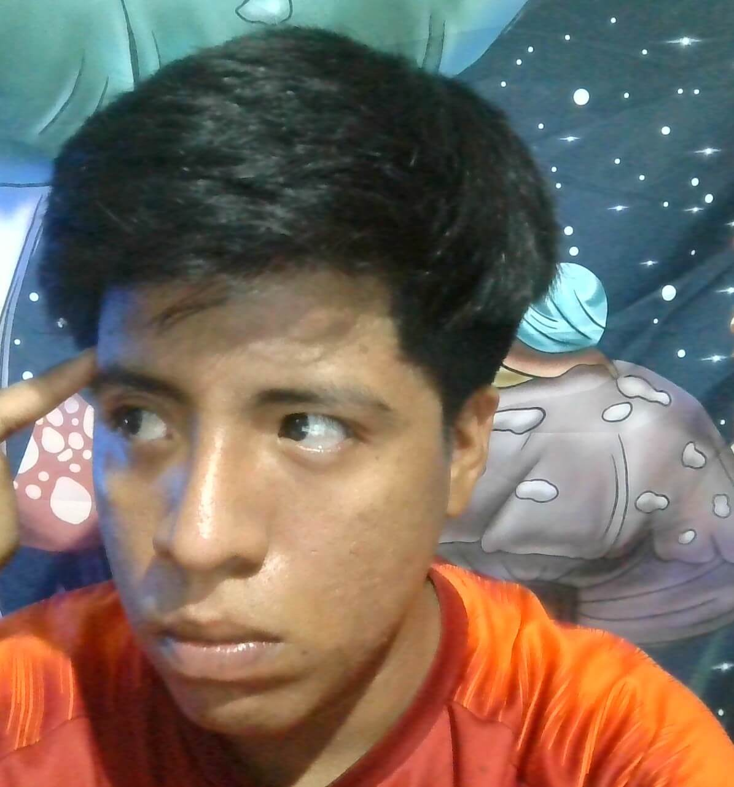
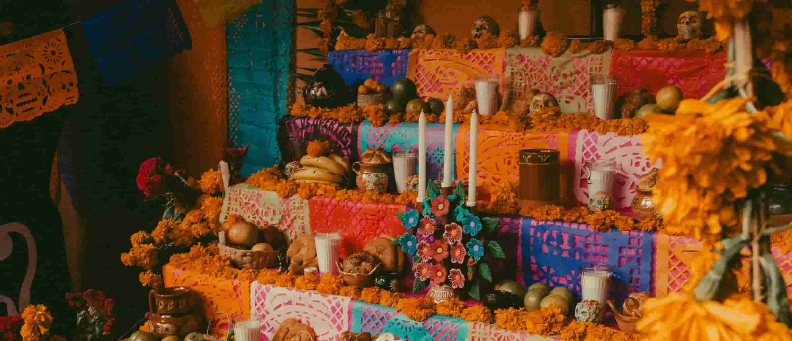

Kevin Samuel Pacheco García
About Me

Hi there, I'm Kevin Samuel. I was born in Puerto Escondido, a city in the state of Oaxaca, Mexico. We're five in my family — I have two parents and two sisters. I started studying at BYU-Pathway last year and one thing I've learned is the power of the Holy Ghost that can help me achieve my academic goals.
Mexico & Culture

The image represents one of our most beloved traditions: the Day of the Dead. We gather with our families in remembrance of our ancestors, play games, and talk with each other. It's one of the best holidays in Mexico.